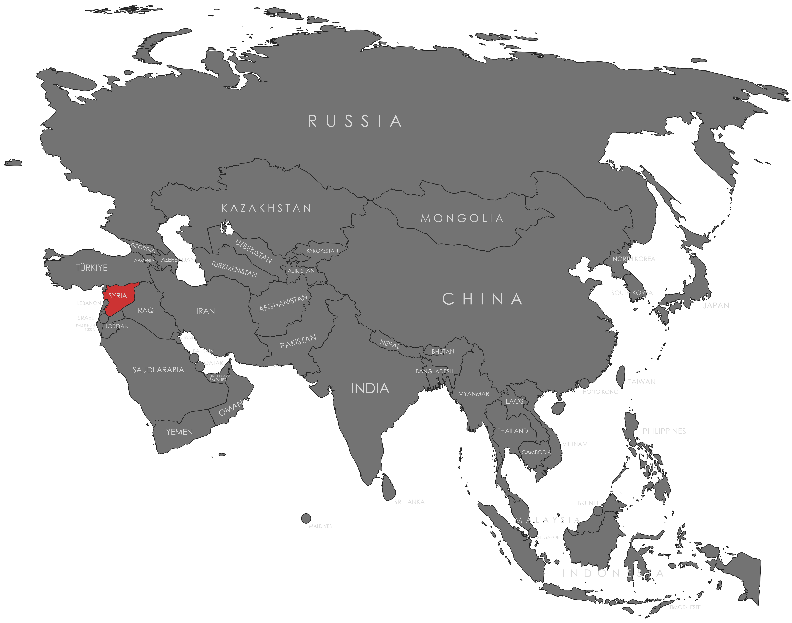

Specifications
- Local Name: سوريا (Sūrīyā)
- Proportion: 2:3
- Name of the Flag: Flag of the Stars (ʿAlam al-Nujūm; علم النجوم)
- Adopted: March 30, 1980
Symbolism
- Red: Struggle for freedom and revolution
- White: Peace and a bright future
- Black: Oppression overcome
- Green stars: Unity and Arab nationalism
- Two green stars in white band: Originally represented Egypt and Syria in the United Arab Republic
Colors:
Shapes / Symbols:
Meaning / Special Display
- Raised during national holidays, military events, and patriotic gatherings.
- Represents Syria’s ongoing pursuit of unity and national identity.
Description
- The flag embodies Syria’s history, Arab identity, and aspirations for unity.
- For citizens, it is a symbol of resilience, patriotism, and national pride.

Return to Gallery